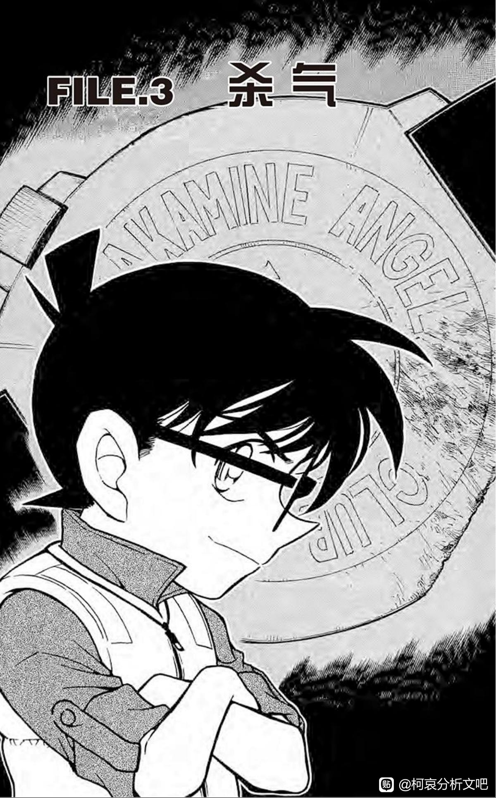
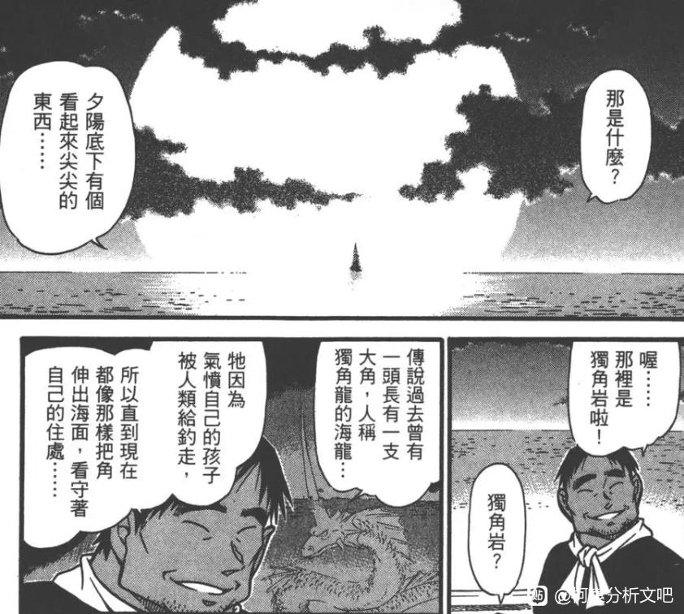

起因是看到了南英大佬提到工藤新一把毛利兰比喻成“魔鬼鱼”
【Satan论】关于水族馆事件 “魟鱼”的比...
让我一下子想明白了之前百思不得其解的一个问题。
如图，这是单行本64第3话的扉页，案件为《鱼儿消失的一角岩》。受害者与凶手同属于akamine angel fish club。其中akamine（赤峰）是大小姐的姓氏，磨去的fish是破案提示，而angel则没有起到任何作用，没有任何意义，甚至没有在案件中被提到。
angel作为名柯中有着明确指向的用语，不应该被随意在边角料的地方拿来凑字数。
于是我看了看这个扉页……没错，这是《名侦探柯南》第666话。
换言之，名侦探柯南的第666话特意提到了angel……
angel fish也有天使鱼、神仙鱼的翻译，是一种原产于南美洲的观赏鱼种。
天使鱼之后是魔鬼鱼，天使鱼还放在第666话，可真有你的啊老贼。
【Satan论】关于水族馆事件 “魟鱼”的比...
让我一下子想明白了之前百思不得其解的一个问题。
如图，这是单行本64第3话的扉页，案件为《鱼儿消失的一角岩》。受害者与凶手同属于akamine angel fish club。其中akamine（赤峰）是大小姐的姓氏，磨去的fish是破案提示，而angel则没有起到任何作用，没有任何意义，甚至没有在案件中被提到。
angel作为名柯中有着明确指向的用语，不应该被随意在边角料的地方拿来凑字数。
于是我看了看这个扉页……没错，这是《名侦探柯南》第666话。
换言之，名侦探柯南的第666话特意提到了angel……
angel fish也有天使鱼、神仙鱼的翻译，是一种原产于南美洲的观赏鱼种。
天使鱼之后是魔鬼鱼，天使鱼还放在第666话，可真有你的啊老贼。

日后若是惹出祸来，别把我说出来就是.jpg
2023-11-16 13:24 | mw1974812:哈哈哈哈 祖师！2023-11-16 14:19 | 夜瞳秒:回复 南英的茶馆 :哈哈哈哈2023-11-16 18:16 | 屈氏名平:南英又号菩提是吧2023-11-16 18:30 | 贴😢😄:哈哈哈2023-11-16 20:51 | 贴吧用户_G7DNV8M:2023-11-16 21:30 | 贴吧用户_0Q8721R:南英祖师！无论如何，您都是先提出撒旦论的祖师！（呐喊）2023-11-16 21:54 | 王道球球:2023-11-20 01:34 | 一颗鱼丸不要面:祖师！！！！
哈哈哈哈 你跳不掉的2023-12-01 17:24 | 贴吧用户_GNySEZ3:名柯圈祖师爷级别的分析2024-01-23 22:52 | 小治保在mih:撒旦脱不掉了


感觉除了13，青山对6好像也有什么执念。漫画66卷从第一话到最后一话全是重点，让我一个很少发言的都没忍住写了篇分析贴。
2023-11-16 12:11 | 贴吧用户_7Wb5MEa:666好像在宗教里面魔鬼的意思2023-11-16 12:15 | 贴吧用户_a62t8Pb:回复 贴吧用户_7Wb5MEa :我刚刚搜到了，好像《圣经》里是有这个说法。2023-11-16 12:20 | 贴吧用户_a62t8Pb:回复 贴吧用户_7Wb5MEa :对6的忌讳似乎也源于对7的追求，感觉蛮有趣的。2023-11-16 12:20 | 贴吧用户_7Wb5MEa:回复 贴吧用户_a62t8Pb :恩在国外6这个数字不太吉利2023-11-16 19:34 | Maria💤:6和13在jdj都是不吉利数字，73总是提到圣经，怀疑和我一样也是jdt2023-12-04 12:24 | 降临暗夜:7是圣数，因为创世7天皆完备。6是试图接近7，但不抵达7的最近的数字，意味着试图染指神的权柄。且第七天实际上已经休息，所以6这个数字是次于7的强大。666代表撒但。 13是因为新教推崇耶稣，叛逆的犹大，害死了耶稣。
充满杀气的天使
天才！
恶魔之角
笠仓那海：以为女人不会变只是男人一厢情愿的想法。所谓一念成佛，一念成魔，天使和魔鬼不过一念之差
关于她的巧合也太多了点，次次都是巧合，那就只能是73故意为之了
666代表魔鬼撒旦，详情请见新约启示录
期待毛利兰泄露情报导致新一假死
2024-01-23 23:06 | 林中的熊宝宝🐨:某人对楼下的“服务员”朗姆说：对啦，话说一直住我家的柯南跟新一小时候长得很像呢，而且他和新一哥哥联系很密切呐！

每次看到吧友分析出来的细节都发自内心想鼓掌，吧友太细致太厉害了
以及莫非青山真的是个天才
以及莫非青山真的是个天才
天才
难绷 很难说是巧合
而且这个案件的暗号破解方法就是，去掉fish后剩下的信息，指向的是凶手
2023-11-16 21:10 | 酒酒酒治愈灵:约等于 Angel = 凶手2023-11-16 21:12 | 贴吧用户_7bb77Ue:青里周平：我怎么没想到呢
好像有人不清楚666是什么，解释一下，在西方文化（基督教文化）里，666是撒旦数字，666本身就是撒旦的代号。
2023-11-16 21:30 | 贴吧用户_0Q8721R:所以毛利兰生日没准真的在6月6日……2023-11-16 22:15 | 櫻花樹下de约定:但我记得毛利兰应该比新一大，新一是5.4，毛利兰不可能大新一一年吧2023-11-16 22:17 | 贴吧用户_0Q8721R:回复 櫻花樹下de约定 :有这个设定吗2023-11-16 22:24 | 贴吧用户_7QMP69K:我没有印象，请问您记得出处是哪里吗？
回复 櫻花樹下de约定 :比新一大的是志保2023-11-16 23:00 | 世界上没有真理:回复 櫻花樹下de约定 :從沒聽過或看過青山說毛利蘭比工藤新一大2023-11-17 23:23 | 櫻花樹下de约定:可能是我记错了吧，不记得在哪看见的了，就留下了这个印象2023-11-26 20:42 | 贴吧用户_5MSCMSX:回复 贴吧用户_0Q8721R :那得有3个六才行2024-01-23 21:15 | 小石头小小😈:回复 贴吧用户_5MSCMSX :12月6日？也符合目前时间线2024-01-23 22:01 | 贴吧用户_5MSCMSX:回复 小石头小小😈 :兰不会是12月吧。2024-01-23 23:20 | 贴吧用户_5MSCMSX:回复 小石头小小😈 :而且12.6更接近6.21的翻转

角泄露情报是迟早的事，让她泄露情报的机会太多了。
有人还与水族馆篇对应暗示了天使鱼就是毛利兰
666话与水族馆篇的奇妙“巧合” 这位大佬分析挺有道理的
青山:我才是真正的撒旦
7是圣数，因为创世7天皆完备。6是试图接近7，但不抵达7的最近的数字，意味着试图染指神的权柄。且第七天实际上已经休息，所以6这个数字是次于7的强大。666代表撒但。
13是因为新教推崇耶稣，叛逆的犹大，害死了耶稣。
13是因为新教推崇耶稣，叛逆的犹大，害死了耶稣。
路西法


没毛病 撒旦也是天使 所以表面是天使内核撒旦也不会打脸这个天使称号
我去看了一下这个案子，
 点明了角与让船搁浅遇难，与海怪有关。
点明了角与让船搁浅遇难，与海怪有关。
73跟兰姐姐什么深仇大恨
点明了角与让船搁浅遇难，与海怪有关。73跟兰姐姐什么深仇大恨

而且这个案子是跟鱼有关，所以为什么安排兰姆为寿司料理师，要跟兰姐海怪扯上关系么
【青山动森】蜜雪儿家的一点小发现 天使o... 类似符号，动森海天使/恶魔的考察